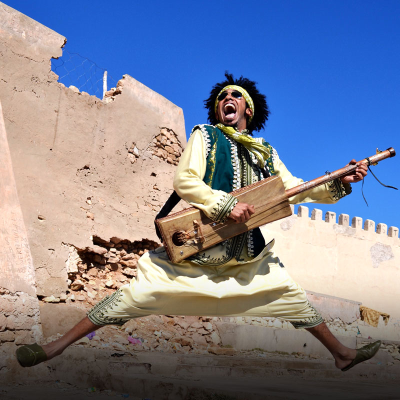

Mehdi Nassouli
MARRUECOS
El cantante se confirma como un revolucionario de los ritmos de su país.
Mehdi Nassouli nació en Taroudant, en el sur de Marruecos, y con solo ocho años, se empezó a interesar por los ritmos folclóricos de su ciudad natal como el deqqa. Cuatro años después ingresó a la banda nacional Malhoun donde descubrió el guembri, un bajo árabe que es la base del gnawa, ritmo de cánticos y danzas rituales que él ha sabido fusionar con elementos de la música occidental como el rock. Admirado en su país, el también cantante ha consolidado una carrera en solitario que lo ha llevado a compartir con estrellas de la world music como el francés Titi Robin y la marfileña Fatoumata Diawara.